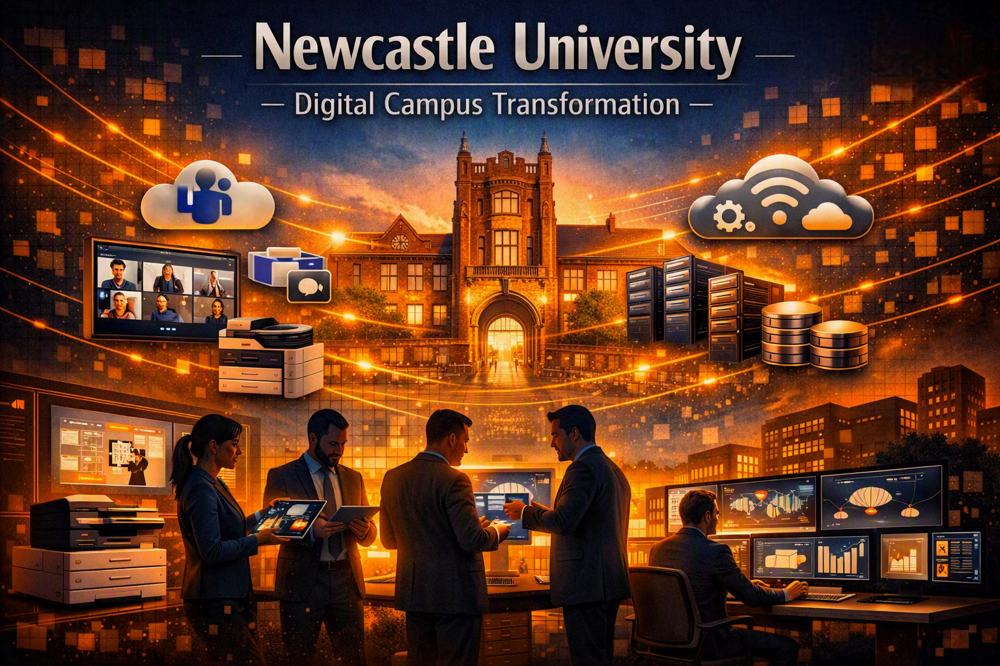

Case studies from real transformation programmes delivered successfully.
This page showcases a selection of programmes I’ve delivered across secure infrastructure,
cloud transformation, digital workplace and enterprise environments. Each case study outlines
the requirements, scope, delivery approach and measurable outcomes achieved.
These examples demonstrate how disciplined programme leadership, structured governance and
multi‑supplier coordination come together to deliver successful transformation in complex,
high‑risk environments.
CASE STUDIES
Programme Delivery Case Studies
Real-world examples of cyber security, cloud transformation and enterprise infrastructure programmes delivered across NHS, Defence and global organisations.
SECURE INFRASTRUCTURE
MET – Secure Infrastructure Transformation
A complete redesign and implementation of a secure public‑sector cloud platform,
unified device ecosystem and integrated access to critical business applications
across a nationwide encrypted WAN. This programme modernised the Home Office’s
technology estate and strengthened operational capability at national scale.
CloudSecurityInfrastructurePublic Sector
Overview
We delivered a secure outsourced IT infrastructure platform within a compliant
public‑sector cloud environment. The programme introduced modern device
management, secure WAN connectivity and integrated access to critical business
applications supplied by multiple delivery partners.
The Challenge
The legacy estate suffered from fragmented infrastructure, inconsistent security
controls, ageing devices, siloed application access and increasing pressure to meet
stringent government security standards. A unified, secure, scalable platform was
required to support thousands of users across a protected national WAN.
Programme Mandate
The MET commissioned a full redesign and build of a secure cloud‑based
operating environment, including end‑to‑end secure services, multi‑partner
application integration and compliance with all government security and operational
standards.
Platform Design & Architecture
The new platform was engineered as the foundation for all services delivered across
the estate. Key architectural components included:
Encrypted WAN connectivity across all operational sites
Centralised identity & access management
Interoperability framework for partner‑provided applications
This architecture ensured security, performance and future scalability.
Secure Digital Services Delivered
A suite of fully managed secure services was deployed across the WAN:
Secure Email Services – protected communication across departments
Remote Access – flexible, policy‑driven working
Mobile Device Management (MDM) – full lifecycle control of mobile endpoints
Application Access Integration – secure connectivity to critical business systems
All services were unified under a single governance and operational model.
Multi‑Partner Delivery Model
The programme required coordinated delivery across multiple organisations. We led:
Architectural governance
Security assurance
Infrastructure build and deployment
Device rollout and management
Integration with partner‑provided applications
Testing, transition and service onboarding
This collaborative model ensured consistent standards and a seamless user
experience.
Key Outcomes
The programme delivered a modern, secure and scalable cloud platform that
strengthened the Home Office’s operational capability. Key outcomes included:
Modern cloud platform replacing legacy infrastructure
Unified device estate across all user groups
Consistent security posture across all sites
Improved operational resilience through cloud hosting
Enhanced mobility via secure remote access and MDM
Integrated access to critical business applications
Future‑ready architecture supporting national responsibilities
Synchrony – Global Managed Services Transformation
A 2‑year global transition and transformation programme delivering a modern,
resilient managed services model across the US, India and the Philippines.
The programme established a unified ITSM platform, modernised end‑user
technology, strengthened infrastructure towers, and delivered a 24/7 global
service desk supporting 125,000 users.
Overview
Synchrony embarked on a multi‑tower transformation to modernise global IT
operations, strengthen service resilience, and elevate user experience across
financial‑grade environments. Over a 2‑year delivery window, I led the full
transition from the incumbent MSP to a new integrated global managed
services model, executed through phased service go‑lives to ensure stability,
compliance and zero disruption.
Global Service Operations
Synchrony required a service model capable of supporting regulated financial
operations across multiple time zones. Key capabilities delivered included:
24/7 Global Service Desk across US, India and the Philippines
Unified ServiceNow ITSM platform (Incident, Request, Change, Problem, Major Incident)
Modernised telephony and contact‑centre systems aligned to financial compliance
These capabilities created a predictable operational rhythm essential for
financial‑sector stability and regulatory adherence.
Incremental Service Go‑Lives
The programme was structured around controlled, phased activation of each
service tower:
High‑risk components: Data Centre Migration, Supply Chain, Device Refresh
This approach ensured uninterrupted service, reduced early‑life incidents, and
enabled continuous learning between phases.
Digital Experience & Automation
To modernise user engagement and reduce operational load, the programme
introduced:
European Central PMO Lead – Unified CPMO Service Design
Designed and implemented a unified Central PMO (CPMO) service model for European
operations, establishing a scalable, compliant and high‑performance governance
framework aligned with ISO, CMS and GDPR requirements across multiple jurisdictions.
PMOGovernanceComplianceService Design
Programme Overview
As European Central PMO Lead, I was responsible for identifying, designing and
implementing a unified CPMO service based out of Belgium to support multinational
clients. The initiative standardised governance, assurance and delivery processes
across European territories while maintaining compliance with ISO, CMS and GDPR.
Role & Responsibilities
I led service design, compliance alignment, capability development, commercial
modelling and platform ownership — ensuring the CPMO operated as a secure,
scalable and auditable governance function.
Design of unified CPMO service model
ISO, CMS & GDPR compliance alignment
Governance & assurance framework creation
Commercial modelling & benefit realisation
Competency & capability development
Recruitment & organisational setup
Project management platform ownership
Transition & operational handover
Service Design & Compliance
The CPMO was designed to operate within a secure, compliant environment, embedding
ISO quality standards, GDPR privacy‑by‑design principles and cross‑border client
confidentiality requirements.
ISO & CMS alignment
GDPR privacy‑by‑design implementation
Service descriptions & SLAs
Secure client data handling
Commercial Modelling & Benefit Realisation
Developed scalable cost models, ROI frameworks and commercial validation processes
to support multi‑country PMO service proposals.
Scalable cost models
ROI & benefit realisation frameworks
Integration into bid & proposal documentation
Capability Development
Introduced the APM Competency Maturity Assessment Framework, creating CPD‑aligned
training pathways and development materials to elevate PMO maturity.
Competency mapping
CPD‑aligned training pathways
Course content & training material development
People development framework
Governance, Assurance & Delivery Frameworks
Designed governance, assurance and delivery toolkits to ensure consistent,
auditable PMO operations across all European projects.
Governance & assurance frameworks
Delivery processes & templates
Project initiation & reporting toolkits
Integration with HR & onboarding processes
Recruitment & Organisational Setup
Managed recruitment strategy, HR coordination and compliance with local employment
regulations including German Workers Council requirements.
Recruitment strategy & selection
HR & legal coordination
Workers Council compliance
Onboarding & induction design
Project Management Platform Ownership
Acted as Service Owner for the PM platform — overseeing assessment, procurement,
design, implementation and integration with CPMO governance processes.
Platform assessment & selection
Vendor procurement & negotiation
Test build & implementation oversight
Integration with CPMO reporting
Outcomes
Delivered a unified, compliant and scalable CPMO service capable of supporting
complex multinational clients — improving governance maturity, strengthening
delivery capability and establishing a foundation for continuous improvement.
Download European CPMO Case Study PDF →
Led the pre‑sales engagement to design and cost a strategic programme for migrating
AstraZeneca’s on‑premises server estate to a secure, scalable cloud‑hosted environment.
The engagement aligned with AstraZeneca’s global digital transformation roadmap and
focused on resilience, compliance and future scalability.
AstraZenecaCloud MigrationAzurePre‑Sales
Tender Stage – Discovery & Requirements Definition
AstraZeneca issued a formal tender to modernise its legacy server estate. I led
the discovery and requirements definition phase, ensuring full compliance with
operational, regulatory and data‑sovereignty constraints.
Coordinating architecture, service & commercial inputs
The tender response positioned the proposal as a secure, scalable and cost‑efficient
migration pathway from on‑prem to cloud.
Solution Stage – Architecture & Service Design
After shortlisting, I collaborated with AstraZeneca’s technical stakeholders and
internal architects to design a hybrid cloud migration model leveraging Azure and
Microsoft 365 services.
Assessment of current infrastructure & workloads
Migration sequencing & dependency mapping
Azure landing zone & governance model design
Identity, access & compliance integration
Operational support & service transition planning
The proposed solution ensured minimal disruption, maximum compliance and future
scalability across AstraZeneca’s global operations.
Cost Modelling & Commercial Validation
I led the commercial modelling phase, translating technical scope into a viable,
transparent and value‑driven proposal.
Cost‑to‑serve models for migration & support
ROI & benefit realisation analysis
Scenario modelling for phased deployment
Margin validation & procurement alignment
Best and Final Offer (BAFO) presentation
Outcome
Delivered a fully validated cloud migration proposal combining technical excellence
with commercial clarity — positioning AstraZeneca to transition from legacy
infrastructure to a secure, compliant and scalable cloud environment enabling
future innovation and operational efficiency.
Download AstraZeneca Cloud Migration PDF →
DIGITAL WORKPLACE
Tesco – Nationwide Windows 11 Transformation Programme
Tesco embarked on one of the largest end‑user technology modernisation programmes in UK
retail history — a nationwide Windows 11 transformation covering 126,000 devices across
stores, distribution centres and corporate offices. The programme leveraged Azure and
Intune to deliver a secure, cloud‑managed, scalable desktop environment.
TescoWindows 11AzureIntune
Programme Overview
The Tesco Windows 11 Transformation Programme modernised end‑user computing across
the UK retail estate, standardising devices onto a secure Windows 11 build managed
through Azure AD and Intune. The initiative focused on performance, security,
manageability and consistency across a highly distributed workforce.
Role & Responsibilities
I provided programme leadership, governance and technical assurance across planning,
deployment and optimisation — ensuring migration sequencing, readiness, and
operational continuity across stores, logistics and corporate environments.
Windows 11 migration strategy and roadmap
Azure AD and Intune modern management design
Deployment governance and risk management
Store, distribution and office rollout coordination
Operational readiness and service transition
Delivery Approach
The programme adopted a phased rollout model, combining automated deployment,
robust testing and structured stakeholder engagement. Close collaboration with
Tesco technology, operations and store leadership ensured minimal disruption and
strong adoption.
Phased deployment across 126,000 devices
Automated build and policy deployment via Intune
Pilot waves and controlled scaling
End‑user communication and support readiness
Outcomes
Delivered a secure, modern Windows 11 environment with improved performance,
simplified management, enhanced cyber posture and a consistent user experience
across Tesco’s nationwide operations.
Download Tesco Windows 11 Transformation PDF →
PMO TRANSFORMATION
Eversheds Sutherland – PMO Turnaround & Service Delivery
Turned around a failing PMO delivery service for Eversheds Sutherland plc, stabilising
governance, reporting, assurance and delivery processes. After recovery, I remained in
place as PMO Manager to deliver the service and embed long‑term operational maturity.
EvershedsPMOGovernanceTurnaround
Programme Overview
When I was first engaged by Eversheds Sutherland plc, the organisation’s PMO
delivery service was struggling to meet expectations. Governance, reporting,
assurance and delivery processes were inconsistent, reactive and lacked the
structure required to support a complex legal‑sector portfolio.
Role & Responsibilities
I was brought in to stabilise the PMO, establish governance discipline, rebuild
delivery confidence and introduce structured reporting and assurance. After
turnaround, I remained in place as PMO Manager to deliver the service and embed
long‑term maturity.
PMO turnaround leadership
Governance & assurance uplift
Portfolio reporting redesign
Risk, issue & dependency management
Stakeholder engagement & alignment
Delivery support & project oversight
Operational maturity uplift
Turnaround Approach
The turnaround focused on stabilising core PMO functions, introducing structured
governance, improving reporting accuracy and establishing predictable delivery
support processes.
Rapid assessment of PMO gaps & failure points
Rebuild of governance & assurance frameworks
Introduction of structured reporting cycles
Clear escalation & decision‑making pathways
Stakeholder confidence restoration
Service Delivery & Stabilisation
After stabilisation, I transitioned into PMO Manager, delivering the service,
embedding maturity and ensuring the PMO operated as a reliable, value‑adding
function.
Ongoing PMO service delivery
Continuous improvement & optimisation
Portfolio oversight & delivery support
Governance discipline & compliance
Outcomes
The PMO was transformed from a failing service into a stable, predictable and
value‑adding governance function — improving delivery confidence, reporting
accuracy and operational maturity across the organisation.
Download Eversheds Sutherland PMO Case Study PDF →
DEFENCE TRANSFORMATION
Ministry of Defence – Office Exchange Programme
Delivering secure, large‑scale modern workplace transformation across Ministry of Defence
sites — migrating legacy Office environments to a unified, cloud‑based collaboration
platform. The programme focused on security assurance, interoperability, and operational
continuity across classified and non‑classified domains.
MoDModern WorkplaceSecurityTransformation
Programme Overview
The MoD Office Exchange Programme modernised collaboration and productivity tools
across Defence organisations, enabling secure communication and document management
within a unified Microsoft 365 environment. The initiative balanced operational
resilience with stringent security and accreditation requirements.
Role & Responsibilities
As part of the delivery leadership team, I oversaw technical assurance, stakeholder
alignment, and governance compliance — ensuring the migration strategy met Defence
Digital standards and maintained service continuity.
Stakeholder engagement across Defence Digital and service branches
Security accreditation and assurance alignment
Technical validation of migration approach and tooling
Operational readiness and transition planning
Governance reporting and risk management
Delivery Approach
The programme adopted a phased migration model, integrating secure data transfer,
user readiness, and post‑deployment support. Collaboration between MoD, delivery
partners, and end‑user communities ensured minimal disruption and full compliance.
Phased rollout across multiple Defence sites
Secure data migration and validation
End‑user enablement and adoption support
Continuous improvement and feedback loops
Outcomes
The programme delivered a secure, modern collaboration environment that improved
productivity, reduced legacy dependencies, and aligned Defence operations with
modern digital standards.
Download MoD Office Exchange Case Study PDF →
NHS TRANSFORMATION
NHS Digital Transformation Programme
Delivering safe, patient‑centred digital transformation across NHS Trusts, ICS organisations
and clinical environments. Focused on operational readiness, clinical safety, cyber uplift,
workflow optimisation and measurable improvement across frontline and back‑office services.
Programme Overview
NHS transformation succeeds when technology, clinical workflows, governance and
operational processes move together. This programme delivers structured, clinically
safe digital change that reduces friction, improves staff experience and strengthens
service quality across clinical and non‑clinical settings.
Clinical Safety & Governance
Digital change in the NHS must protect patient safety. I work closely with CCIOs,
CNIOs, clinical safety officers and operational teams to ensure transformation is
compliant with DCB 0129/0160 and aligned to safe clinical workflows.
Clinical safety governance & hazard management
Workflow alignment with frontline clinical teams
Risk control, auditability & structured reporting
Integrated planning & RAID discipline
Cyber Uplift & Modernisation
Strengthening cyber posture across NHS estates through secure configuration,
compliance uplift and modern workplace deployment.
Cyber security uplift & compliance alignment
Windows 11 & modern workplace rollout
Cloud & infrastructure modernisation
Medical device integration & interoperability
Operational Readiness & Alignment
NHS transformation requires coordination across estates, IT, clinical services,
operations and external suppliers. I ensure all parties are aligned to shared outcomes
and delivery discipline.
Operational readiness & service transition
Stakeholder alignment across clinical & technical teams
Supplier coordination & governance compliance
Predictable delivery & clear accountability
Measurable Outcomes
The programme delivers safer workflows, stronger cyber posture, improved staff
experience and reduced operational friction — enabling NHS organisations to deliver
better patient care through reliable, modern digital services.
Download NHS Digital Transformation PDF →
The Device Lifecycle Management solution empowers organisations to take full control of
their workplace device estate through a structured, end‑to‑end model: Inform → Procure →
Support → Recover. As part of the Pre‑Sales team, I shape this solution commercially and
technically — from initial RFP/ITT response through to final contract negotiation and SoW
creation.
Solution Overview
Device Lifecycle Management provides a structured, governed approach to managing
workplace devices across their full lifecycle. The model ensures organisations can
optimise cost, improve user experience, and maintain compliance through a repeatable,
scalable framework.
Pre‑Sales Role & Responsibilities
I lead the commercial and technical shaping of the solution — ensuring every bid is
compliant, compelling, and aligned to customer requirements and Computacenter’s
delivery standards.
Requirement analysis & clarification
Lifecycle alignment (Inform → Procure → Support → Recover)
Drafting technical & commercial narratives
Collaboration with SMEs, architects & commercial analysts
Down‑Selection & Solution Shaping
Once shortlisted, I work directly with client technical and commercial teams to refine
the proposal. This ensures the final solution is deliverable, scalable, and aligned to
operational and commercial expectations.
Technical workshops & architecture validation
Engagement with logistics & managed‑service teams
SLAs, service models & operational alignment
Legal review of terms, liabilities & compliance
Resource planning & commercial viability checks
Negotiation & BAFO
I lead the commercial negotiation phase, culminating in a Best and Final Offer (BAFO)
that balances client value with delivery feasibility.
Pricing refinement & delivery phasing
Risk assessment & mitigation planning
Negotiation of concessions & value‑adds
Final proposal presentation & cost justification
Contract‑ready Statement of Work (SoW)
Strategic Impact
Through structured down‑selection, technical validation and disciplined negotiation,
each bid evolves into a fully governed, contract‑ready delivery model that enhances
user experience, optimises technology, and supports sustainable IT operations.
Download Device Lifecycle Management Case Study PDF →
DIGITAL CAMPUS TRANSFORMATION

Newcastle University – Teams Rooms, Managed Print & Wireless Infrastructure Refresh
A major technology transformation modernising collaboration, connectivity and print
infrastructure across Newcastle University’s academic and residential estate. Delivered
Microsoft Teams Rooms, a refreshed Managed Print Service, full wireless AP deployment,
backend server builds, application configuration and policy creation — all completed under
strict time constraints ahead of the new academic term.
Teams RoomsManaged PrintWirelessCampus IT
Programme Overview
Delivered across multiple campuses and student halls, the programme required
precise coordination to ensure all systems were fully operational before the start of
term. The initiative enhanced teaching, research and administrative collaboration while
improving connectivity and service reliability for thousands of returning staff and
students.
Teams Rooms Deployment
Designed and implemented Microsoft Teams Rooms across lecture theatres, meeting
spaces and collaboration hubs.
Integrated conferencing, content sharing & room booking with Microsoft 365
End‑to‑end configuration, testing & user adoption support
Operational manuals, service descriptions & KB articles
Achieved full readiness before term start
Managed Print Refresh
Rolled out a secure, cost‑efficient Managed Print Service across all faculties and
administrative departments.
Consolidated legacy print infrastructure
Cloud‑managed print platform with secure release
Cost‑tracking & sustainability reporting
Governance policies for access, data protection & compliance
Wireless Access Point (AP) Deployment
Deployed new enterprise‑grade wireless access points across campuses and student
halls.
Designed & tested coverage models for high‑performance connectivity
Integrated APs with centralised monitoring & NAC systems
Deployment runbooks & early‑life support documentation
Executed rollout under strict time constraints
Backend Infrastructure & Application Configuration
Built and configured backend servers supporting Teams Rooms, print management
and wireless operations.
Compliance with university IT security & data‑protection standards
Parallel server builds & policy creation to meet term‑start readiness
Outcomes
Modernised collaboration across academic & administrative functions
Enhanced wireless coverage & reliability across all campuses
Reduced print costs & improved sustainability
Strengthened IT governance & operational efficiency
All services delivered on schedule with zero disruption
Strategic Impact
The programme established a connected, collaborative and sustainable digital campus.
Delivered under significant time pressure, it empowered staff and students with modern
tools, reliable connectivity and streamlined services — positioning the university for
continued innovation in teaching, research and digital engagement.
Download Newcastle University Case Study PDF →
INFRASTRUCTURE MODERNISATION
Santander – AD DC Server Upgrade & Domain Services Promotion
A critical infrastructure upgrade modernising Santander’s Active Directory Domain Controller
environment. The programme uplifted server OS versions, promoted forest and domain functional
levels, strengthened identity management, and improved resilience across regulated financial‑services
operations.
Overview
Between March and December 2017, Santander undertook a major upgrade of its Active Directory
Domain Controller (AD DC) environment. I led the programme to modernise in‑situ domain
controllers, uplift server OS versions, and promote AD DS forest and domain functional levels
to align with Microsoft’s enterprise standards.
The Challenge
Santander’s legacy AD DC estate required modernisation to support future scalability, security,
and compliance. The upgrade needed to be executed without disrupting business‑critical
financial operations, requiring careful sequencing, rollback planning, and multi‑team
coordination across infrastructure, security and compliance functions.
Programme Mandate
Upgrade domain controller servers to Windows Server 2008 R2, promote AD DS functional levels,
strengthen identity‑management capability, and ensure full alignment with Santander’s
governance and regulatory frameworks.
Key Deliverables
The programme delivered a complete uplift of Santander’s AD DC environment:
Rollback and validation plans ensuring zero downtime
Schema verification, replication health checks & multi‑site testing
Cross‑team coordination with infrastructure, security & compliance
Testing & Validation
Extensive pre‑production testing ensured stability and compliance:
Schema validation and replication integrity checks
Multi‑site testing across Santander’s operational footprint
Controlled upgrade windows with rollback assurance
Outcome
The upgrade delivered a secure, stable and future‑ready Active Directory environment,
strengthening Santander’s identity‑management capability and enabling integration with
modern Microsoft technologies.
Impact
The programme improved operational resilience, enhanced security posture, and established a
foundation for future cloud and hybrid identity initiatives.
Deutsche Bank – Global M365 Rollout & User Adoption
A global transformation programme modernising Deutsche Bank’s unified communications ecosystem.
The initiative deployed Microsoft Teams as the central collaboration hub, retired legacy telephony,
uplifted user experience, and delivered structured adoption across 16,000 employees worldwide.
Digital WorkplaceMicrosoft 365User AdoptionUnified Communications
Overview
Between 2020 and 2022, Deutsche Bank undertook a major global programme to modernise
collaboration and communication across its workforce. The goal was to retire fragmented
legacy platforms and fully leverage Microsoft Office 365, delivering a seamless, secure,
cloud‑based collaboration experience for 16,000 employees across global offices.
The Challenge
Deutsche Bank’s legacy telephony and conferencing systems created inconsistent user
experience, operational overhead, and limited integration with modern digital workplace
tools. The organisation required a unified collaboration platform and a structured adoption
strategy to ensure employees embraced new ways of working.
Programme Mandate
Deploy Microsoft Teams as the central collaboration hub, integrate chat, voice, video and
document sharing, embed workflows into ServiceNow, retire legacy systems, and deliver a
global user‑adoption programme with multilingual support.
Key Deliverables
The programme delivered a complete transformation of Deutsche Bank’s collaboration
ecosystem:
Unified Communications Transition – migration to Teams Voice & Meetings
Structured User Adoption Strategy – training, champions network, multilingual support
ServiceNow Integration – embedded M365 workflows for streamlined support
User Adoption & Cultural Change
Adoption was treated as a cultural transformation, not just a technical rollout. The programme
delivered structured training, communication, and engagement to ensure employees embraced
new digital ways of working.
Outcomes
The programme delivered measurable improvements across collaboration, reliability and cost:
Enhanced user experience and global collaboration
Improved operational reliability and reduced support overhead
Significant cost savings through platform consolidation
Modern digital workplace foundation for future innovation
Result
Deutsche Bank transitioned from fragmented legacy systems to a unified, cloud‑based
collaboration platform. Employees gained a modern, connected and agile digital workplace,
enabling secure collaboration from anywhere and supporting the bank’s strategic vision for
digital excellence.
Download Deutsche Bank Case Study PDF →
CLOUD TRANSFORMATION
Telefónica – AWS Infrastructure, SaaS Development & Global Data Migration
A global infrastructure transformation modernising Telefónica’s enterprise estate across
46,000 devices and 750 locations. Delivered cloud‑native AWS foundations, SaaS
development, microservices integration, global data migration, and unified operational
governance across multiple regions and time zones.
AWSSaaSCloud MigrationGlobal Delivery
Programme Overview
Telefónica’s legacy infrastructure required modernisation to support rapid growth,
distributed operations and evolving customer demands. The programme introduced a
cloud‑first architecture leveraging AWS to deliver elasticity, resilience and cost
efficiency across the enterprise.
AWS Infrastructure Modernisation
Designed and deployed a multi‑region AWS environment supporting compute,
storage and networking workloads.
Multi‑region AWS architecture for global workloads
Infrastructure‑as‑Code using Terraform & CloudFormation
SaaS Development & Integration
Delivered new SaaS applications using microservices and containerised
architectures, integrated with AWS native services.
Microservices‑based SaaS applications for internal & customer services
Identity, billing & analytics modules using Lambda, API Gateway & DynamoDB
CI/CD pipelines via AWS CodePipeline & GitHub Actions
Data Migration & Cloud Storage
Migrated structured and unstructured data from on‑premises systems to AWS S3,
RDS and Redshift with full integrity validation.
Migration of global datasets to AWS S3, RDS & Redshift
Checksum validation & encryption at rest/in transit
Automated reconciliation & global replication strategy
End‑User Estate Transformation
Supported 46,000 devices across 750 locations, introducing secure connectivity,
identity federation and unified endpoint management.
Secure connectivity & identity federation
Unified access policies via AWS Workspaces & Intune
Early‑life support & user adoption campaigns
Operational Governance & Service Management
Established ITSM integration with ServiceNow and delivered operational manuals,
runbooks and training across Europe, Latin America and Asia.
ServiceNow integration for incident, change & configuration
Operational manuals & cloud‑operations runbooks
Training & knowledge‑transfer across global teams
Outcomes
Global AWS infrastructure supporting 46,000 users
Modern SaaS ecosystem enabling faster product delivery
Secure, compliant data migration with improved resilience
Strategic Impact
The programme established a global digital backbone connecting people, platforms
and data across continents — enabling continuous innovation, operational agility and
sustainable growth.
Download Telefónica Case Study PDF →
END‑USER TRANSFORMATION
UK Home Office – 32,000‑Device Windows 10 Transformation
A major end‑user technology transformation upgrading 32,000 devices across the
Home Office’s national estate. Delivered modern desktop capabilities, strengthened
security posture, unified device management, and enabled cloud‑based storage and
remote‑working capabilities through SCCM, Intune, Azure AD and OneDrive.
Windows 10Public SectorSecurityCloud Management
Programme Overview
The Home Office delivered a structured, multi‑phase upgrade programme
modernising its desktop environment while maintaining operational continuity
across critical national services. The initiative unified device management,
improved performance, and enabled secure remote working across multiple
agencies.
Key DeliverablesDevice Upgrade
Migrated 32,000 endpoints from legacy Windows 7/8 to Windows 10, ensuring
compatibility with modern applications and security baselines.
SCCM & Intune Integration
Implemented hybrid management architecture for automated deployment,
patching, compliance enforcement and secure configuration.
Cloud Storage Enablement
Introduced secure OneDrive and Azure‑based storage solutions, reducing
reliance on on‑premises infrastructure and improving mobility.
Identity & Access Management
Strengthened authentication and policy enforcement through Azure AD,
conditional access and modern identity controls.
Operational Tooling
Enhanced service‑management tooling for incident, request and change
processes, improving operational efficiency and visibility.
User Adoption & Training
Delivered communication campaigns, training sessions and early‑life support to
ensure smooth transition and minimise disruption.
Governance & Reporting
Established dashboards for rollout progress, compliance, security posture and
user satisfaction metrics.
Security & Compliance Alignment
Windows 10’s security framework was mapped directly to Home Office risk and
compliance standards. The rollout introduced TPM 2.0, BitLocker encryption and
advanced identity management, strengthening endpoint protection across all
operational sites.
Outcomes
Modernised desktop experience for 32,000 users
Improved endpoint security and compliance posture
Reduced operational overhead through automation and cloud management
Enhanced mobility and remote‑work capability
Scalable foundation for future digital‑workplace initiatives
Strategic Impact
The transformation positioned the Home Office to deliver a consistent, secure
and high‑performance user experience across its national operations. It
reinforced the department’s commitment to innovation, resilience and digital
transformation.
Download Home Office Case Study PDF →
PROFESSIONAL SECONDMENTS
Computacenter – Strategic Secondments Portfolio
A portfolio of high‑impact secondments across service transition, transformation,
ServiceNow project management, European PMO leadership and pre‑sales solution
design. Each engagement strengthened operational maturity, commercial performance
and customer success across enterprise and public‑sector accounts.
Service TransitionPMOServiceNowPre‑Sales
Overview
During my tenure at Computacenter, I delivered multiple strategic secondments
covering service transition, transformation delivery, ServiceNow project
management, European PMO leadership and pre‑sales solution architecture.
These roles contributed directly to organisational growth, operational maturity
and customer satisfaction across enterprise and public‑sector clients.
1. Service Transition & Transformation Delivery Manager
Delivered complex service transitions and transformations for new and existing
managed‑service customers, ensuring seamless onboarding, operational
readiness and service stability.
Managed new business take‑on from incumbent suppliers
Integrated new service lines into existing ITSM frameworks
Structured KT plans, runbooks and early‑life support
Authored service designs, operational manuals and knowledge‑base articles
Ensured AIS governance and service‑readiness compliance
2. ServiceNow SME Project Manager
Led the Professional Services ServiceNow Enablement Project, uplifting platform
maturity across project management, reporting, financials, time recording and
resource management.
Delivered GAP analysis and requirements definition
Developed validated use cases aligned to PS delivery models
Acted as super‑user and adoption champion
Authored training modules and user guides
Established dashboards and reporting structures
3. European Central PMO Lead
Based in Belgium, led the design and implementation of a unified Central PMO
service supporting Computacenter’s European clients.
Defined CPMO service descriptions, SLAs and governance frameworks
Ensured compliance with ISO, CMS, GDPR and secure‑client protocols
Developed commercial models, ROI frameworks and benefit realisation
Designed PMO training and capability development frameworks
Standardised delivery processes, tools and templates
Managed recruitment aligned to German Workers Council requirements
Owned project‑management platform selection and implementation
Delivered AIS‑governed service handover to France
4. Pre‑Sales Solution Lead
Partnered with account management, architects and service designers to deliver
commercially robust, technically sound bid responses for new business.
Conducted structured discovery and requirements gathering
Led end‑to‑end solution & service‑model design
Built detailed cost, resource and commercial models
Delivered CADRO analysis for SoW and governance
Coordinated supplier engagement and procurement alignment
Produced contract‑ready Statements of Work
Facilitated technical workshops and business‑case validation
Led BAFO pricing refinement and negotiation
Delivered executive‑grade client presentations
Maintained revenue, margin and commercial discipline
Strategic Impact
These secondments delivered measurable improvements in service maturity,
operational efficiency and commercial performance. Each engagement reinforced
Computacenter’s reputation for excellence in service transition, transformation
and solution delivery.
Download Secondments Portfolio PDF →
GLOBAL IT ROLLOUT
HSBC – Global Windows 11 Rollout & User Adoption Programme
A global end‑user technology transformation delivering Windows 11 to 46,000 users
across 750 locations. The programme modernised HSBC’s desktop experience,
strengthened security baselines, uplifted device performance, and enabled a more
agile, cloud‑connected workforce aligned with the bank’s digital‑banking vision.
Windows 11Digital WorkplaceSecurityGlobal Rollout
Overview
HSBC delivered one of the largest end‑user technology upgrades in its history:
a global rollout of Windows 11 designed to modernise the desktop experience,
uplift security, and support a cloud‑connected workforce. The programme
transitioned 46,000 users across 750 locations through structured waves,
ensuring minimal disruption and full compliance with financial‑sector
regulatory standards.
The Challenge
HSBC’s legacy desktop estate required modernisation to support new digital
capabilities, enhanced security controls, and improved performance. The
challenge was to deliver a global operating‑system upgrade without disrupting
business‑critical financial operations, while ensuring employees understood and
adopted new Windows 11 features.
Programme Mandate
Execute a global Windows 11 rollout, refresh legacy devices, uplift security
baselines, integrate rollout workflows into ServiceNow, deliver multilingual
adoption programmes, and establish global governance and reporting for
progress, compliance and user satisfaction.
Key Deliverables
The programme delivered a complete uplift of HSBC’s end‑user technology:
Global deployment to 46,000 users across 750 locations
Modern device refresh with secure, high‑performance builds
ServiceNow integration for rollout tracking & support workflows
User adoption programme with multilingual training & champions network
Performance improvements: reduced boot times & improved stability
Global dashboards for compliance, progress & satisfaction metrics
Transformation Approach
The rollout was executed through incremental regional go‑lives, supported by
automation and analytics to monitor deployment success. A dedicated User
Adoption Office coordinated communications, training and engagement,
ensuring employees understood new Windows 11 features such as Snap
Layouts, Teams integration and enhanced security controls.
Security & Compliance Alignment
Windows 11’s security architecture was mapped directly to HSBC’s enterprise
risk framework, ensuring compliance with financial‑sector regulations and
internal audit standards. The rollout strengthened endpoint protection, identity
assurance and data‑loss prevention across all regions.
Outcomes
The programme delivered measurable improvements across security, user
experience and operational efficiency:
Modernised desktop experience for 46,000 users
Improved endpoint security & compliance posture
Reduced operational overhead & support demand
Enhanced productivity through Microsoft 365 integration
Scalable foundation for future digital‑workplace initiatives
Strategic Impact
The Windows 11 rollout positioned HSBC to deliver a consistent, secure and
high‑performance user experience globally. It reinforced the bank’s commitment
to innovation, resilience and digital transformation — enabling employees to
work smarter, faster and more securely in a modern financial‑services
environment.
Download HSBC Case Study PDF →
ENTERPRISE IT TRANSFORMATION
DWP – Enterprise IT Transformation Portfolio
A multi‑workstream enterprise transformation modernising the Department for Work
and Pensions’ national technology estate. The portfolio uplifted SQL platforms,
collaboration tools, workspace management, wireless infrastructure, identity
services, and ITSM operations — strengthening resilience, security and service
delivery across the UK’s largest public‑sector department.
Overview
The Department for Work and Pensions (DWP) undertook a comprehensive
enterprise‑wide technology transformation programme to modernise its
infrastructure, improve service delivery, and strengthen operational resilience.
The portfolio comprised multiple concurrent workstreams, each contributing to
a unified, secure and scalable digital environment supporting thousands of
users nationwide.
Programme Scope
The portfolio delivered modernisation across core infrastructure, collaboration,
identity, workspace management and service‑management capabilities:
SQL Upgrade
Upgraded legacy SQL environments to supported versions, improving
performance, security and maintainability. Delivered automated migration
scripts, schema validation and post‑upgrade optimisation across mission‑critical
databases.
Condeco Rollout
Implemented Condeco workspace management across DWP sites, enabling
intelligent desk booking, meeting‑room scheduling and occupancy analytics.
Integrated with Active Directory and Exchange for seamless authentication and
calendar synchronisation.
Unified Communications
Transitioned from Microsoft Communicator and Lync to Microsoft Teams,
establishing a single, secure collaboration platform with enterprise‑grade
reliability for voice, video and messaging.
Managed Print Services
Deployed a modern Managed Print solution across regional offices, consolidating
print infrastructure and introducing secure print release, cost tracking and
sustainability reporting — reducing print volume and operational overhead.
SharePoint Development
Delivered customised SharePoint Online sites for document management,
workflow automation and departmental collaboration. Introduced metadata‑driven
search, version control and Power Automate integration.
Business Continuity & Disaster Recovery
Designed and tested comprehensive BC & DR frameworks, including failover
simulations and recovery validation for critical systems. Improved recovery time
objectives and ensured compliance with government resilience standards.
Quest Deployment
Implemented Quest migration and identity‑management tools to support Active
Directory consolidation, user provisioning and lifecycle management — enabling
faster onboarding and reduced administrative complexity.
Wireless Access Point Deployment
Rolled out enterprise‑grade wireless access points across DWP sites, delivering
secure, high‑performance connectivity for staff and visitors. Integrated with NAC
and centralised monitoring for real‑time visibility.
ITSM Integration
Integrated multiple service‑management platforms into a unified ITSM ecosystem
using ServiceNow for incident, change and asset management. Delivered
automation, improved SLA compliance and end‑to‑end operational visibility.
Outcomes
The portfolio delivered measurable improvements across infrastructure,
collaboration, resilience and operational efficiency:
Modernised infrastructure supporting thousands of end‑users
Enhanced collaboration through unified platforms
Improved operational resilience and disaster‑recovery readiness
Reduced costs through consolidation and automation
Strengthened governance, compliance and service transparency
Strategic Impact
The programme delivered a cohesive digital foundation enabling DWP to operate
with greater agility, efficiency and resilience. It aligned technology with
organisational goals, empowering teams to deliver public services more
effectively through a secure, modern and connected workplace.
Download DWP Case Study PDF →